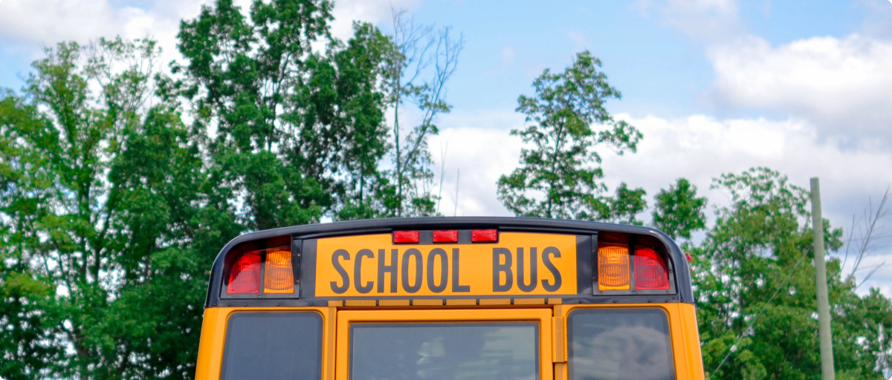

kegiatan belajar mengajar offline dimulai
12 desember 2020
Jika anak kita ditanya apa mimpinya pasti jawabnya saya ingin kembali belajar di sekolah. Saya ingin bertemu dengan teman-teman sekelas saya. begitupun sebagian besar orang tua, mimpi mereka adalah melihat anaknya kembali ke aktivitas sekolah secara langsung. Orang tua selama ini banyak yang mengaku lelah karena anak-anaknya selama pandemi lebih banyak menghabiskan waktu di depan layar gawainya bukan hanya untuk belajar namun juga untuk bermain game. Belum lagi harus menemani dan membantu anak-anak belajar sementara pekerjaan di rumah tidaklah sedikit.
Namun perlahan demi perlahan sejak Oktober lalu, beberapa sekolah di Indonesia sudah mulai menerapkan Pembelajaran Tatap Muka atau PTM namun secara terbatas termasuk di Purwakarta kota saya tercinta. Seminggu sekali anak-anak bersekolah tentunya dengan pembatasan jarak ataupun waktu belajar yang mengalami pengurangan.
Sekolah tempat saya mengabdi yaitu SMPN 8 Purwakarta baru di Januari tahun 2022 ini akan mulai melaksanakan pembelajaran tatap muka secara terbatas setelah memenuhi persyaratan yang ditentukan oleh Pemerintah Daerah dalam hal ini Dinas Pendidikan yang beberapa syaratnya antara lain tersedianya fasilitas kesehatan, siswa-siswi serta civitas sekolah yang sudah di vaksin dan beberapa persyaratan lainnya.
Karenanya untuk mewujudkan mimpi para siswa yang ingin kembali belajar di sekolah, di hari Jumat tanggal 7 Januari 2022 diselenggarakan kegiatan gotong royong membersihkan sekolah yang dilaksanakan oleh perwakilan orang tua siswa, perwakilan siswa, perwakilan OSIS dan tentunya dilaksanakan juga oleh segenap civitas sekolah baik itu Guru maupun Staff Tata Usaha.
Kegiatan gotong royong membersihkan sekolah tersebut diadakan agar ketika anak kembali ke kelasnya, kelasnya sudah dalam keadaan bersih. Seperti yang dikatakan oleh perwakilan orang tua dari kelas 7 dan 9 yang mengatakan alasan ikut gotong royong membersihkan kelas anaknya agar anaknya dapat belajar dengan nyaman dan sehat karena lingkungan kelas maupun sekolahnya yang bersih. Selain itu mengingat salah satu syarat bisa diadakan pembelajaran tatap muka adalah lingkungan pembelajaran yang bersih dan sehat.
Selain membawa peralatan kebersihan masing-masing, ada pula orang tua yang membawa makanan untuk dikonsumsi setelah kelas selesai. Terjalin pula kerjasama yang baik antar orang tua padahal ada yang tidak kenal awalnya begitu juga anak-anak kelas 7 yang akhirnya bisa bertemu dengan teman kelasnya secara langsung setelah di semester ganjil ini hanya bertemu di pembelajaran online. Semuanya hadir demi mewujudkan pembelajaran tatap muka meskipun terbatas.

Artikel Lainya
12 Desember 2020
12 Desember 2020
12 Desember 2020